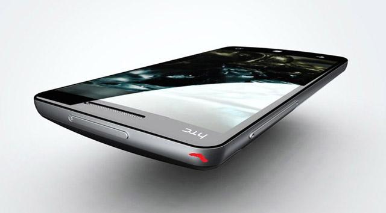
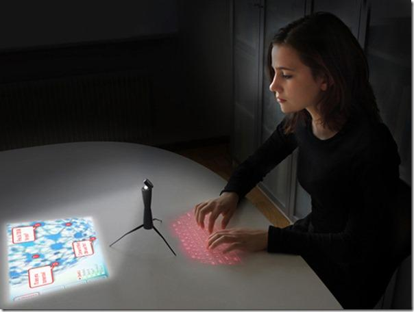
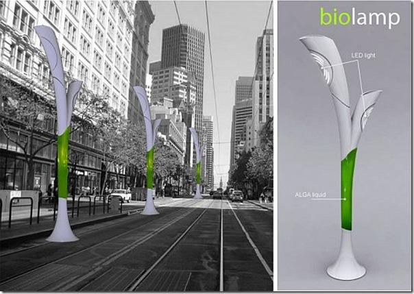
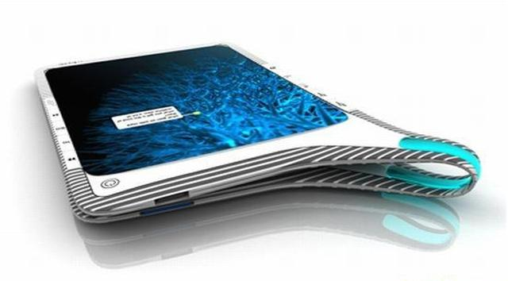
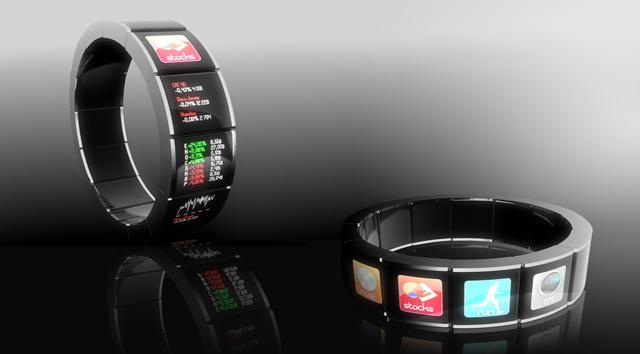
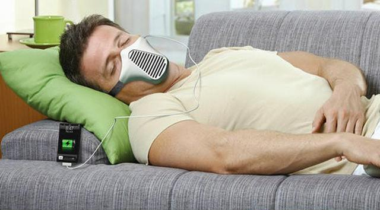
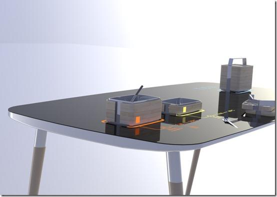

|  | Bruisable Gadgets Heal Themselves In The SunGADGETS of the future could bruise when dropped, or scratched to highlight damaged areas. Don't worry though, as a few minutes in the sun will be enough to fade the bruise and repair the damage. Marek Urban and colleagues, at the University of Southern Mississippi in Hattiesburg, were inspired to create their self-healing plastic by signs of healing in nature, such as newly formed tree bark. This new material turns red when damaged and repairs itself when exposed to visible light, or changes in temperature or pH. It can also fix itself multiple times, unlike previous materials. |
|  | Concept "Spider Computer"What can we say about this concept? Spider Computer, a portable device that relies on a projected screen and laser keyboard, to offer you a ready computer on the go. That's why he has three thin legs like a spider. When they are hidden, the device becomes a mobile phone. It can be simply put in your pocket. And when the legs are deployed, the device can easily be placed on a flat surface. This will be the computer. The mirror head opens, and the projection is directed towards the table surface or a wall. Digital correction compensates for angular differences in projection versus surface. Circular LCD display with graphic interface. A working prototype was made for technology, user studies and research. |
|  | Eco BiolampAs climate change becomes an ever greater threat, our world needs smart solutions for generating green energy. An eco-friendly energy resource that is taken from nature, will create a healthier environment to support human life. The Eco Biolamp is an innovative concept from Hungarian industrial designer Peter Horvath. This Biolamp is designed to light up streets, by converting CO2 in the air into fuel; a smart solution to power an eco-friendly city. It consists of a liquid, algae combined with water, that transforms CO2 into O2. It is also fitted with a pump for sucking smog through the air, to aid in providing a cleaner environment. |
|  | Concept 'Infinite Book'The device is called Infinite Book. Sooner or later, there had to be something similar, a kind of bridge between digital and analog worlds. This book is an infinite device consisting of two coupled flexible displays. This design allows you to browse through the e-book as well as the present, with each page displaying tossing back. Very interesting and clever idea. |
|  | Concept 'Watch of the Future'The whole idea of the concept, is to allow the owner to control and receive updates directly from the wrist, view applications, have access to contacts, SMS, Facebook updates, GPS and a lot more. With all these great features, the 'Watch of the Future' concept also keeps some basic functions of a watch, like keeping you updated with the current time. This innovative watch concept would keep the application you use most at easy access, and would even change the icons location on the strap according to the position of your wrist. Some of the other features available on this innovative concept, are the possibility to track your pulse and even your emotions. Depending on how you wear the bracelet the icons location on the strap changes. Sounds Cool! |
|  | Aire Mask: Your Breathing Into Renewable Electric PowerThe idea behind the mask is that your breath charges your small electronics. The mask contains small wind turbines, that convert your huffing and puffing into renewable power. The Aire is just a concept at this point, and it's not very likely to see the light of a local Best Buy shelf anytime soon. The mask is intriguing enough to have earned a Red Dot design award, in the energy category for its creator, Joao Paulo Lammoglia. However, it does have some aesthetic issues that walk the line between creepy and cool. Maybe it would look less threatening, if it came in colors like hot pink and lime green. In the search for renewable energy sources, it makes sense to go all out, and try some new ideas, like strapping wind turbines to your mouth. Should the Aire ever make it into production, be sure to grab one for your Mortal Kombat costume. |
|  | Concept 'Healthy Eating'The 'Office Lunchbox \& Table' system, is an elegant design proposal that calibrates these opportunities for design to enhance eating and interaction in the workplace. The system consists of a portable lunchbox that features multiple containers, eating utensils, a metal base for induction heating, and intelligent heat sensors. The second part of the system is an office lunch table that incorporates an induction cook top, to allow workers to simply place their lunchbox containers on a smart cooking surface, which intelligently controls the reheating process with ease. A 'smart' touch interface activates when it recognises the lunchbox containers. This solution provides an unparalleled convenience. It encourages a shift towards office workers preparing healthy and low-cost meals. |